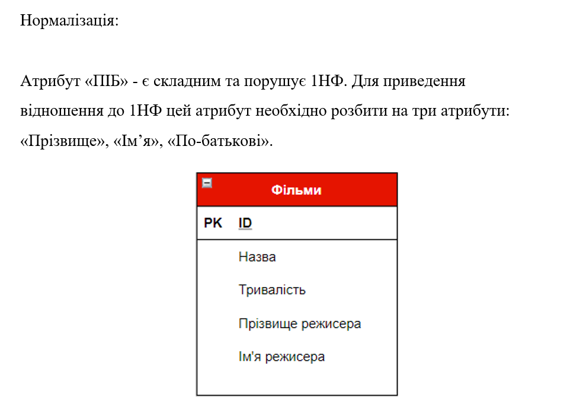
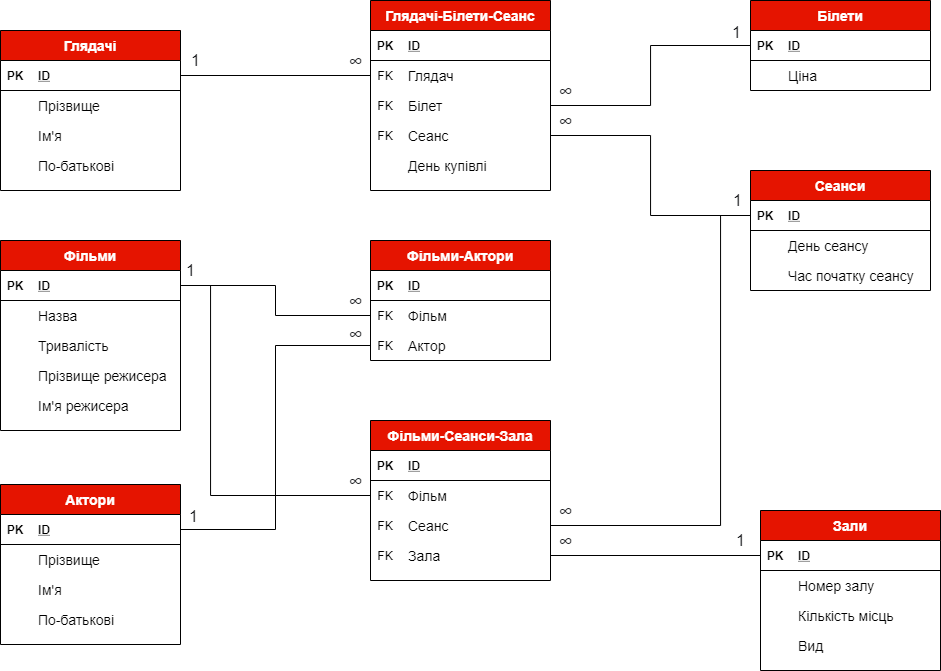

Далі ми можемо перейти до побудови даталогічної моделі даних на основі інфологічного аналізу предметної області. Але перед
побудовою даталогічної діаграми спершу необхідно нормалізувати модель даних. В нашому випадку атрибут "ПІБ" є складеним та
порушує 1НФ. Щоб нормалізувати нашу базу даних, необхідно розділити кожен атрибут "ПІБ" або "ПІ" на відпідні атрибути
"Прізвище", "Ім'я" та "По-батькові". Приклад нормалізації однієї з таблиць наведено нижче

Після нормалізації всіх таблиць можемо приступити до даталогічного проектування. Даталогічна модель нашої бази даних
представлена далі
